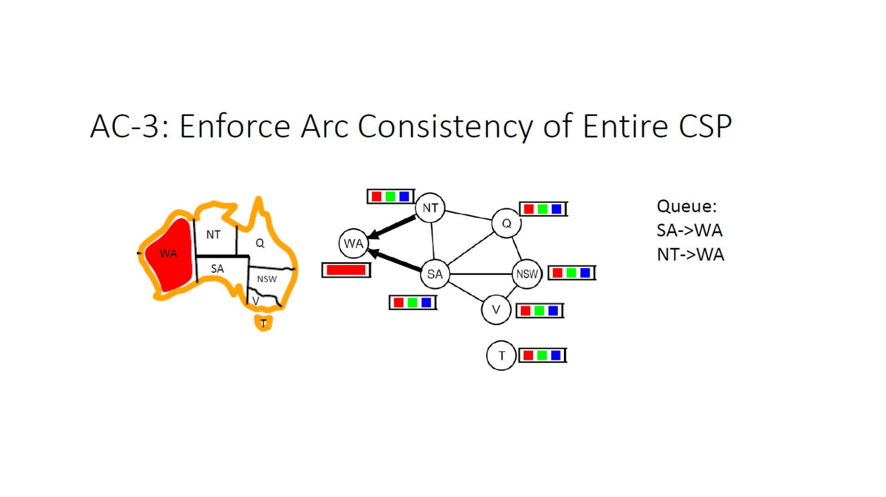
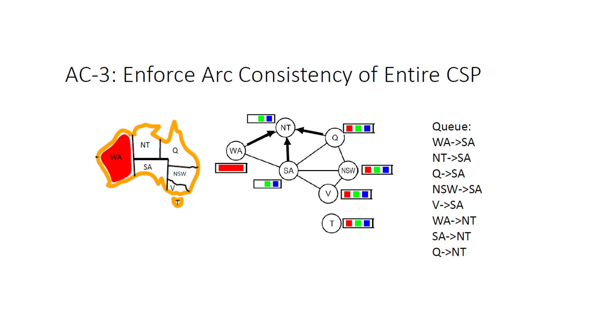
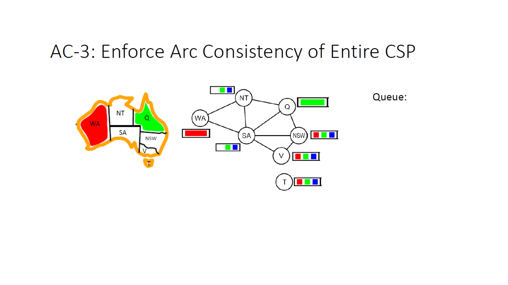
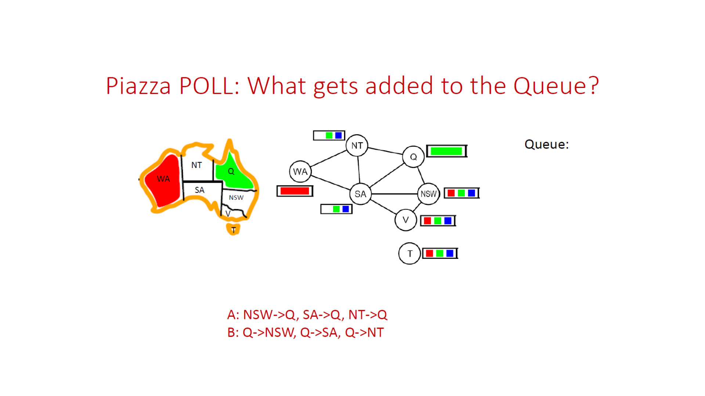
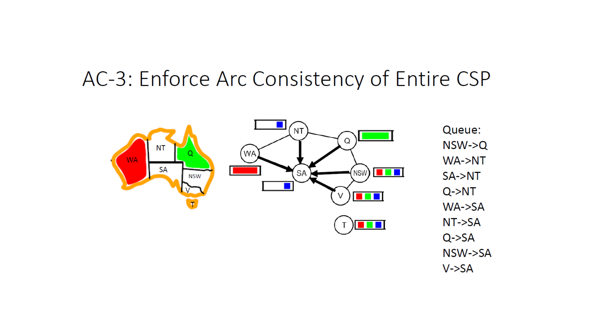
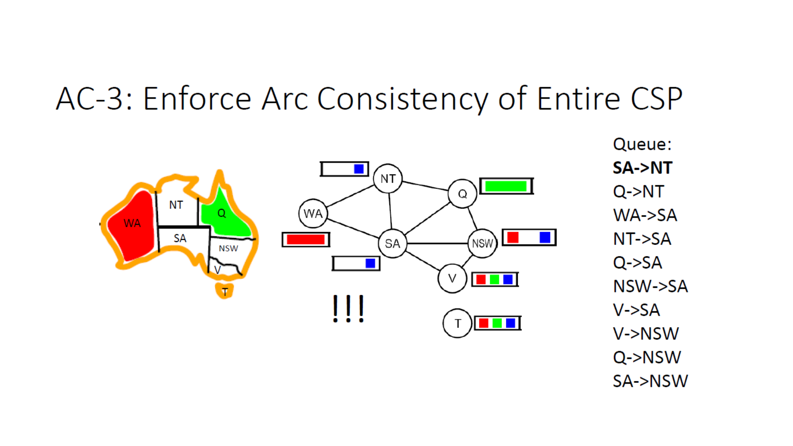
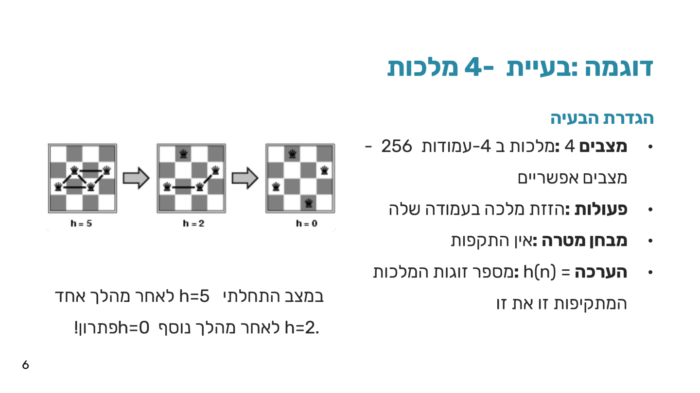

עקביות קשתות (AC-3) ו-Min-Conflicts
⏱ זמן משוער: 45 דק'
0. האינטואיציה — לבדוק קדימה זה טוב, אז למה לא לבדוק עוד ועוד?
ביחידה CSP ו-Backtracking פגשנו את forward checking: כשמציבים ערך למשתנה, בודקים מיד את השכנים הישירים שלו ומורידים מהדומיין שלהם ערכים שכבר לא עקביים עם ההצבה החדשה. זה עוזר — אבל זה עוצר אחרי צעד אחד. מה אם ההסרה אצל שכן אחד "מדביקה" גם את השכן של השכן? forward checking לא בודק את זה. זה בדיוק החור ש- עקביות קשתות (arc consistency) סוגרת: במקום לבדוק צעד אחד קדימה, מפיצים את ההשפעה של כל שינוי דומיין הלאה בגרף, עד שאין יותר מה להסיר.
נעבוד עם אותה דוגמה שכבר מוכרת מ-CSP: צביעת מפת אוסטרליה (WA, NT, SA, Q, NSW, V, T, אילוץ "≠" בין כל שני אזורים שכנים). ובסוף הפרק נעבור לכיוון שונה לגמרי — חיפוש מקומי (שהכרנו כבר ביחידה חיפוש מקומי וגנטי) מותאם במיוחד ל-CSP, בשם Min-Conflicts.
מקור: 09-arc-consistency.pdf (עמ' 1)
1. הגדרות — קשת עקבית, REVISE וגרף האילוצים
כל בעיית CSP ניתנת לייצוג כ- גרף אילוצים (constraint graph): קדקוד לכל משתנה, קשת לכל אילוץ בינארי בין שני משתנים. בדוגמת אוסטרליה: WA–NT, WA–SA, NT–SA, NT–Q, SA–Q, SA–NSW, SA–V, Q–NSW, NSW–V — ו-T (טסמניה) מופיע כקדקוד מבודד, ללא אף קשת (זה יהיה חשוב בהמשך).

מוסכמת סימון (חשוב לזכור, קל להתבלבל): הכיתוב "X->Y" בתור פירושו "לבדוק (revise) את הדומיין של X ביחס ל-Y" — כלומר X הוא הצד שעלול להצטמצם, ו-Y הוא ה"תומך" שנבדק מולו. דרך זכירה נוחה: מי שמשתנה מקבל לתוכו חצים חדשים — החצים בגרף מצביעים אל הצומת שהשתנה, כי אלה בדיוק הקשתות שנוספו לתור כדי לבדוק את שכניו מולו.
מקור: 09-arc-consistency.pdf (עמ' 1–2), 08-csp-2.pdf (עמ' 15)
2. אלגוריתם AC-3 — תור קשתות שמתפשט על הגרף
AC-3 (Arc Consistency Algorithm #3) מתחזק תור של קשתות מכוונות. בכל צעד: מוציאים קשת מראש התור, מפעילים עליה REVISE, ואם היא שינתה את הדומיין — מוסיפים חזרה את כל הקשתות שנכנסות למשתנה שהשתנה. האלגוריתם עוצר כשהתור מתרוקן (הגרף עקבי מקומית) או כשמתגלה domain wipe-out (דומיין מתרוקן לגמרי — אין פתרון תחת ההשערה הנוכחית).
השקפים מציגים את המנגנון הזה דרך טרייס חזותי מלא (בהמשך הפרק) ולא כטקסט פסאודו-קוד מוכן; הבלוק הבא הוא הפרמול שלנו לאותו מנגנון בדיוק כפי שתואר:
AC-3(csp):
queue ← all arcs (Xi, Xj) in the constraint graph // "Xi->Xj" = revise Xi w.r.t. Xj
while queue ≠ ∅:
(Xi, Xj) ← queue.pop_front()
if REVISE(Xi, Xj):
if Domain(Xi) = ∅:
return false // domain wipe-out — no consistent solution
for each Xk in Neighbors(Xi): // naive version: includes Xj too
queue.push_back((Xk, Xi))
return true
REVISE(Xi, Xj):
revised ← false
for each x in Domain(Xi):
if no y in Domain(Xj) satisfies the constraint(Xi,Xj) for (x, y):
remove x from Domain(Xi)
revised ← true
return revised
מקור: 09-arc-consistency.pdf (עמ' 2–16, "נקודות למבחן")
3. הרצה מלאה — AC-3 על מפת אוסטרליה, אחרי WA=אדום
נניח שכבר הצבנו WA = אדום (למשל כצעד ראשון בחיפוש backtracking). כל שאר הדומיינים עדיין מלאים: {אדום, ירוק, כחול}. מכיוון ש-WA השתנה, שתי הקשתות הנכנסות אליו מתווספות לתור — קרי, שני שכניו NT ו- SA צריכים להיבדק מולו:
Queue: SA->WA, NT->WA

גל ראשון — WA מדביק את שכניו
מעבדים SA->WA: מכיוון ש-WA={אדום}, כל ערך ב-SA ששווה לאדום נפסל — אדום מוסר מ-SA (SA = {ירוק, כחול}). מכיוון ש-SA השתנה, מתווספות לתור הקשתות K->SA עבור כל שכניו: WA, NT, Q, NSW, V.
בתור מגיע עכשיו NT->WA: אותו היגיון בדיוק — אדום מוסר מ-NT (NT = {ירוק, כחול}), ומתווספות הקשתות K->NT עבור WA, SA, Q.

WA ו-NT->WA: שניהם מאבדים את האדום, שלושה חצים אל תוך NT" loading="lazy">המצב אחרי גל ראשון זה:
| משתנה | דומיין |
|---|---|
| WA | {אדום} |
| NT | {ירוק, כחול} |
| SA | {ירוק, כחול} |
| Q | {אדום, ירוק, כחול} |
| NSW | {אדום, ירוק, כחול} |
| V | {אדום, ירוק, כחול} |
| T | {אדום, ירוק, כחול} |
Queue: WA->SA, NT->SA, Q->SA, NSW->SA, V->SA, WA->NT, SA->NT, Q->NT
עכשיו מגיע רצף מעניין: שמונה הקשתות שנשארו בתור כולן עוברות בלי לגרום להסרה כלשהי. לכל ערך בצד השמאלי של כל קשת יש ערך תומך בצד הימני (למשל WA->SA: לערך היחיד אדום ב-WA יש תמיכה — ירוק וגם כחול ב-SA שונים ממנו). התור מתרוקן מבלי שאף דומיין נוסף השתנה.

גל שני — ואיפה בדיוק זה נשבר
עכשיו Q מוצב לירוק. שאלת תרגול (Piazza poll) שהמרצה שאלה בכיתה בדיוק בנקודה הזו:
שתי האפשרויות שהוצגו בכיתה:
- A: NSW->Q, SA->Q, NT->Q
- B: Q->NSW, Q->SA, Q->NT
התשובה הנכונה היא A. לפי מוסכמת הסימון — "K->Z" נוסף לכל שכן K של המשתנה Z שהשתנה — מוסיפים את הקשתות המצביעות אל Q, לא את אלה היוצאות ממנו: NT->Q, SA->Q, NSW->Q. אלה בדיוק המשתנים שדומיינם עלול להצטמצם עכשיו ביחס ל-Q החדש.

מעבדים את שלוש הקשתות החדשות אחת אחת:
- NT->Q: NT={ירוק,כחול} מול Q={ירוק}. הערך ירוק ב-NT דורש ערך שונה ב-Q, אך Q מכיל רק ירוק ⇒ ירוק מוסר מ-NT. NT נשאר עם {כחול} בלבד! נוספות K->NT עבור WA, SA, Q.
- SA->Q: אותו היגיון — ירוק מוסר מ-SA. SA נשאר עם {כחול} בלבד! נוספות K->SA עבור WA, NT, Q, NSW, V.
- NSW->Q: NSW={אדום,ירוק,כחול} מול Q={ירוק} — ירוק מוסר מ-NSW, שנשאר עם {אדום, כחול}. נוספות K->NSW עבור SA, Q, V.

המצב אחרי גל שני:
| משתנה | דומיין |
|---|---|
| WA | {אדום} |
| NT | {כחול} |
| SA | {כחול} |
| Q | {ירוק} |
| NSW | {אדום, כחול} |
| V | {אדום, ירוק, כחול} |
| T | {אדום, ירוק, כחול} |
התור ממשיך עם קשתות שלא גורמות שינוי (WA->NT — אין הסרה, כי WA={אדום} שונה מ-NT={כחול}) — אבל הקשת הבאה בתור אחריה מסומנת בשקף בסימני "!!!":
Queue: SA->NT (!!!), Q->NT, WA->SA, NT->SA, Q->SA, NSW->SA, V->SA, V->NSW, Q->NSW, SA->NSW

נסו בעצמכם: הריצו AC-3 צעד-אחר-צעד על גרף האילוצים של אוסטרליה, בחרו איזו הצבה ראשונית לתת ל-WA, וצפו בתור ובדומיינים מתעדכנים בזמן אמת — כולל הרגע של domain wipe-out.
מקור: 09-arc-consistency.pdf (עמ' 2–16)
4. מלכודות למבחן ב-AC-3
- AC-3 לא פותר CSP, רק מסנן. ראינו את זה במפורש: אחרי WA=אדום בלבד, שלושה משתנים (Q, NSW, V) נשארו עם כל שלושת הערכים. AC-3 מצמצם את מרחב החיפוש, לא מחליף אותו.
- domain wipe-out ≠ "האלגוריתם נכשל". זה בדיוק הישג — AC-3 מגלה חוסר עקביות מוקדם, לפני שבזבזנו זמן חיפוש נוסף על ענף שממילא ייכשל.
- T (טסמניה) לעולם לא מצטמצם. מכיוון שהוא קדקוד מבודד בגרף האילוצים (ללא שום שכן), אף REVISE לא נוגע בו — הדומיין שלו נשאר {אדום, ירוק, כחול} לאורך כל הריצה. דוגמה נוחה לכך ש-AC-3 (וגם CSP באופן כללי) לא "נוגע" במשתנים ללא אילוצים רלוונטיים.
- כיוון הקשת בתור. "X->Y" = revise X ביחס ל-Y. קל לטעות ולחשוב שהחץ מציין כיוון "השפעה" הפוך.
🎓 הרחבה — לא מוזכר מספרית בשקפים: סיבוכיות זמן של AC-3
תוצאה תיאורטית סטנדרטית (לא מופיעה כמספר בשקפים, אך אינה סותרת אותם): קשת (Xi,Xj) יכולה להיכנס לתור מחדש עד O(d) פעמים (פעם לכל ערך שמוסר מ-Xi), וכל קריאה ל-REVISE עולה עד O(d²) (בדיקת כל ערך מול כל ערך). עם O(n²) קשתות אפשריות בגרף על n משתנים, הסיבוכיות הכוללת היא O(n²d³), כאשר d גודל הדומיין — פולינומיאלי, בניגוד לחיפוש backtracking המלא שהוא אקספוננציאלי.
מקור: 09-arc-consistency.pdf ("נקודות למבחן")
5. Min-Conflicts — חיפוש מקומי המותאם ל-CSP
עד כה כל שיטה שראינו ל-CSP — backtracking, arc consistency — עבדה עם השמות חלקיות שמתמלאות בהדרגה. עכשיו כיוון הפוך לגמרי: חיפוש מקומי (שהכרנו כללית ביחידה חיפוש מקומי וגנטי) מתחיל מהשמה מלאה — כולל הפרות אילוצים — ומנסה לתקן אותה בהדרגה.
לפני שמיישמים חיפוש מקומי על CSP, שלוש שאלות עקרוניות שכל שיטה כזו חייבת לענות עליהן:
- מצב התחלתי — מהו המצב ממנו מתחילים?
- ערך היוריסטי — כיצד מודדים את איכות המצב?
- פעולת עוקב — מה השינוי האפשרי בכל צעד?
הניסוח הפורמלי של CSP כבעיית חיפוש מקומי:
| מרכיב | הגדרה |
|---|---|
| מצב (State) | ערכי ההשמה הנוכחיים לכל המשתנים (השמה מלאה). |
| מצב התחלתי | השמה מלאה רנדומלית — לכל משתנה ערך כלשהו מהדומיין שלו. |
| פונקציית עוקב | שינוי הערך של משתנה שמפר אילוץ לערך אחר מהדומיין שלו. |
| מבחן מטרה | השמה מלאה וחוקית — כל המשתנים מוגדרים ואף אילוץ לא מופר. |
| עלות מסלול | 1 לכל שינוי השמה בודד. |
דוגמה: 4-מלכות כחיפוש מקומי
4 מלכות ב-4 עמודות ⇒ 4⁴ = 256 מצבים אפשריים. פעולה = הזזת מלכה בעמודה שלה. ההערכה h(n) = מספר זוגות המלכות שתוקפות זו את זו (לא מספר המלכות!). המטרה: h=0.

אלגוריתמים כלליים כמו Hill Climbing עונים על שאלת בחירת הערך באופן חמדני (הטוב ביותר). שתי שאלות המפתח שכל אלגוריתם חיפוש מקומי ל-CSP חייב לענות עליהן: איזה משתנה לשנות, ואיזה ערך חדש לתת לו.
הפסאודו-קוד (מילה במילה מהמקור):
MinConflicts(csp, max_steps):
current ← an initial complete assignment for csp
for i = 1 to max_steps:
{if current is a solution for csp:
return current
X ← a randomly selected conflicted variable from Vars[csp]
val ← a value for X minimizing Conflicts(X, current, csp)
current = current with {X = val}
}
return failure
למה זה עובד כל כך טוב בפועל
כשמתחילים ממצב סביר, Min-Conflicts מציג ביצועים מרשימים במיוחד על בעיות CSP קשות — שני מספרים שהמרצה מדגישה:
- בעיית מיליון-מלכות — נפתרת בכ-50 צעדים בלבד, כמעט קבוע ביחס לגודל הבעיה!
- תזמון תצפיות טלסקופ החלל האבל — 10 דקות עם Min-Conflicts, לעומת 3 שבועות בחיפוש מסורתי.
מקור: 08-csp-2.pdf (עמ' 2–14)
6. מבנה הבעיה — תת-בעיות בלתי תלויות
חזרה לגרף האילוצים: T (טסמניה) מנותק מכל שאר האזורים — אין קשת בינו לביניהם. זה בדיוק המקרה של תת-בעיות בלתי תלויות: כל רכיב קשירות בגרף האילוצים הוא תת-בעיה עצמאית שאפשר לפתור בנפרד, ולאחד את הפתרונות לכדי פתרון כולל.
למה זה משמעותי כל כך? נניח n משתנים, דומיין בגודל d, ופירוק לתת-בעיות בגודל c קבוע כל אחת:
| גישה | סיבוכיות |
|---|---|
| פתרון כולל, ללא פירוק | O(dn) — אקספוננציאלי ב-n |
| פתרון מפורק לתת-בעיות | O(dc · n/c) — לינארי ב-n |
דוגמה מספרית שהמרצה מדגישה (n=80, d=2, c=20):
| גישה | מספר פעולות | זמן משוער (10M nodes/sec) |
|---|---|---|
| פתרון כולל | 2⁸⁰ ≈ 10²⁴ | כ-4 מיליארד שנה |
| פתרון מפורק | 4 × 2²⁰ ≈ 4M | כ-0.4 שניות בלבד! |
מקור: 08-csp-2.pdf (עמ' 15–17)
7. השוואה — Hill Climbing מול Min-Conflicts
המקור לטבלה הזו הוא דף השוואה כתוב בכתב יד של המרצה (לא שקופית מודפסת). חלק מהניסוח המדויק קשה לפענוח חד-משמעי מהכתב יד — במקומות כאלה מסומן בפירוש "(לא ודאי)", כדי לא לייחס למרצה ניסוח שלא בהכרח נכתב.
| Min-Conflicts | Hill Climbing (כללי) | |
|---|---|---|
| 1. סוג האלגוריתם | שניהם מסומנים ✓ בכתב היד — שני האלגוריתמים הם חיפוש מקומי (iterative improvement) שעלול להיתקע במקסימום/מינימום מקומי. | |
| 2. היקף ההערכה בכל צעד | מעריך כנראה רק את המשתנה שנבחר, לא את כל הלוח בבת אחת (שחזור לפי כתב היד, לא ודאי במלואו). | מתייחס למצב (state) הגלובלי הנוכחי כולו (פענוח חלקי, לא ודאי). |
| 3. מה משתנה בכל צעד | שניהם משנים ערך של משתנה בודד אחד בכל איטרציה — לא את כל הפתרון בבת אחת. | |
| 4. פונקציית המטרה (מוקף בעיגול בכתב היד) | ממזער במפורש את מספר האילוצים המופרים (constraint violations). | ממזער/ממקסם פונקציית הערכה (evaluation) כללית כלשהי של המצב — לא בהכרח ספירת אילוצים. |
| 5. הסיכון המרכזי (מוקף באדום בכתב היד) | עלול לרוץ ללא סוף (infinite loop) אם ממשיך לבחור משתנים מתנגשים בלי שיפור אמיתי. | עלול "להיתקע" ב-current (plateau / מקסימום מקומי) כשאין שכן טוב יותר מהמצב הנוכחי. |
| 6. תנאי עצירה | 0 = אין אף אילוץ מופר — תנאי אובייקטיבי ומדיד: פתרון חוקי נמצא בוודאות. | מגיעים לשיא ביחס ל-current — תנאי יחסי: אין שכן טוב יותר, לאו דווקא אפס הפרות/פתרון גלובלי. |
מקור: comparison-hillclimbing-minconflicts.pdf
8. מלכודות למבחן — סיכום
- AC-3 מסנן, לא פותר. אל תניחו שאם AC-3 סיים לרוץ, ה-CSP נפתר — ייתכן שנשארו כמה משתנים עם יותר מערך אחד בדומיין.
- מוסכמת הכיוון "X->Y" = revise X ביחס ל-Y. החץ בגרף מצביע אל המשתנה שהשתנה, לא ממנו.
- domain wipe-out = יש לחזור אחורה, לא שגיאה באלגוריתם — זו בדיוק הדרך שבה AC-3 מגלה חוסר-עקביות מוקדם.
- h(n) ב-4-מלכות סופר זוגות, לא מלכות בודדות שתוקפות.
- בחירת המשתנה ב-Min-Conflicts רנדומלית (מתוך המשתנים המפרים אילוץ) — בחירת הערך היא זו שממוקדת (ממזערת קונפליקטים).
- Min-Conflicts עלול ללולאה אינסופית; Hill Climbing עלול להיתקע ב-plateau — שני סיכונים שונים, לא אותה תופעה.
9. בדיקה עצמית
לפי מוסכמת הסימון בתור AC-3, מה המשמעות של הרשומה "SA->WA" בתור?
בהרצה על מפת אוסטרליה (אחרי WA=אדום ואז Q=ירוק), מתי בדיוק מתרחש domain wipe-out?
כש-REVISE משנה בפועל את הדומיין של משתנה Xi, אילו קשתות מתווספות לתור בגרסה שמופיעה בשקפים?
מה עונה על שאלת "בחירת המשתנה" באלגוריתם Min-Conflicts?
ומה עונה על שאלת "בחירת הערך" באלגוריתם Min-Conflicts?
בדוגמה המספרית מהשקפים (n=80 משתנים, d=2 ערכים, פירוק לתת-בעיות בגודל c=20), מה ההבדל בין הגישה הכוללת לגישה המפורקת?
לאחר ההשמה הראשונה WA=אדום בלבד, מה בדיוק AC-3 מצליח להשיג במפת אוסטרליה, לפי ההרצה שראינו?
מהו ההבדל המרכזי בתנאי העצירה בין Min-Conflicts ל-Hill Climbing הכללי?
סיימתם את הפרק? סמנו אותו כהושלם: